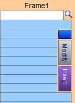

Add Stacked (or Layered) Frames
FrameReady is able to calculate the exact dimensions for each frame and liner to ensure a proper fit.
-
See also: Enter a Floater Frame and Floater Space
-
See also: Enter a Hand Wrapped Liner
-
Use the Layered Frame feature to price up to five frames.
-
See also: Layered or Stacked Frames Explained
Note: Frame1 is always closest to the artwork. Fillets and Extenders do not increase the size of the frame layered on top of them. This allows for a proper fit within the rabbet of next frame.
How to add Layered or Stacked Frames and Fillets

-
In your Work Order, click the Layered Frames icon button.

-
Locate the light blue Frame 1 column (right).
Always begin at Frame1.

-
Enter the Moulding # or use the magnifying glass icon to locate a moulding; the moulding price code data appears in the Frame1 column.
-
Clickthe purple Insert button to move Frame1 into the Frame2 position, etc.
The data in the Frame1 column moves to Frame2. Frame1 is cleared and ready for a new moulding number. -
Click the teal X to remove the information from this layer/column. Doing so moves the other frames down.
-
If you have not yet entered the corner sample into the Price Codes file, then click the blue button to enter a Moulding Number and Retail Price for the entire frame.
-
Click the grey Modify button to make adjustments to alter the outside dimensions of the frame.
This is particularly important when stacking or layering one frame upon another. An accurate calculation is possible by adjusting the lip size of the inner frame.
CAUTION: Changes made here are saved in the Price Codes file and applied to the current Work Order AND all future Work Orders.
-
When you return to the main Work Order screen, the Layer Frames icon changes color to indicate the number of layered frames.
While only the Frame1 moulding appears on the screen, the total price is calculated and displayed.
All mouldings are detailed on the printed Work Order.
Examples
-
Example: Your fillet or Bevelled Accent™ is so wide that it covers up too much of the artwork. Verify the sight size of the fillet in the Width field. Enter 0 in Lip field. This will increase the overall size of the frame.
-
Example: 3/16″ is assumed as the Lip size if the field is empty. When measuring the lip of a moulding or liner, subtract 1/16″ from the actual size as a fitting allowance. This gives you an accurate size for the next frame. E.g. if you have a liner that has 1/2″ lip the size must be entered as 7/16″.
© 2023 Adatasol, Inc.